用法：A型题点选项即判；X型题先多选、再点【判卷】；答完自动展开解析。刷完本课再过一遍底部【本课速记卡】，效果最好。
一、概述与病因8 题
X型·多选Q1P1 · 概述·三病变
肝硬化发生必备的病变（『三病变』）包括
答案与解析
答案：BCD
『三病变』：①弥漫性肝细胞变性坏死（桥接坏死或亚大块坏死）②肝细胞结节状再生（网状支架塌陷）③广泛纤维化。广泛水样变性是急性普通型肝炎的特点（A 错）。
📖 讲义定位：P1 · 概述·三病变
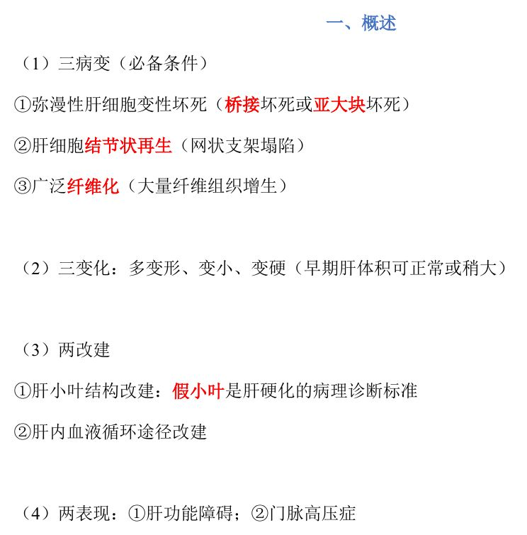
📷 讲义原图 · P1 · 概述·三病变
A型·单选Q2P1 · 概述·两改建
肝硬化的病理诊断标准是
答案与解析
答案：B
『两改建』：肝小叶结构改建——假小叶是肝硬化的病理诊断标准。
📖 讲义定位：P1 · 概述·两改建
A型·单选Q3P1 · 概述·三变化
肝硬化的肝脏大体变化通常是
答案与解析
答案：D
『三变化』：多变形、变小、变硬（早期肝体积可正常或稍大）。
📖 讲义定位：P1 · 概述·三变化
A型·单选Q4P2 · 病因举例
在我国，肝硬化最主要的病因是
答案与解析
答案：A
病毒性肝炎是我国肝硬化的最主要病因；酒精是欧美最主要的病因。
📖 讲义定位：P2 · 病因举例
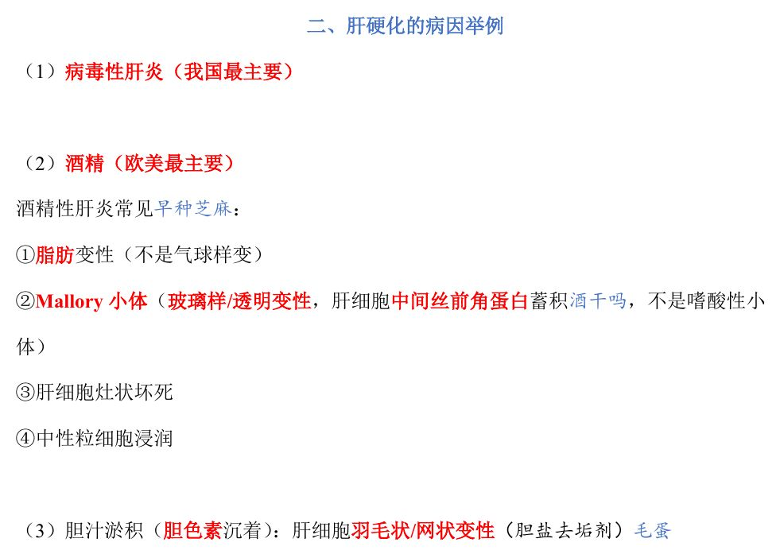
📷 讲义原图 · P2 · 病因举例
A型·单选Q5P2 · 病因举例·酒精
酒精性肝炎时肝细胞的典型改变是
答案与解析
答案：C
酒精性肝炎常见：①脂肪变性（注意：不是气球样变）②Mallory 小体③肝细胞灶状坏死④中性粒细胞浸润。
📖 讲义定位：P2 · 病因举例·酒精
A型·单选Q6P2 · 病因举例·酒精
Mallory 小体（酒精性肝炎）的本质是
答案与解析
答案：C
Mallory 小体本质是肝细胞中间丝前角蛋白蓄积，属玻璃样/透明变性；不是嗜酸性小体（嗜酸性小体＝凋亡）。
📖 讲义定位：P2 · 病因举例·酒精
X型·多选Q7P2 · 病因举例
酒精性肝炎的常见病变有
答案与解析
答案：ACD
酒精性肝炎四特点：脂肪变性、Mallory 小体、肝细胞灶状坏死、中性粒细胞浸润。羽毛状/网状变性（胆盐『去垢剂』作用）见于胆汁淤积（B 错）。
📖 讲义定位：P2 · 病因举例
A型·单选Q8P2 · 病因举例·胆汁淤积
胆汁淤积时肝细胞的典型变性是
答案与解析
答案：D
胆汁淤积（胆色素沉着）：肝细胞羽毛状/网状变性（胆盐去垢剂作用）。
📖 讲义定位：P2 · 病因举例·胆汁淤积
二、假小叶与分类8 题
A型·单选Q9P2 · 假小叶
假小叶是指
答案与解析
答案：B
假小叶（镜下结构）＝胶原纤维分割包绕原肝小叶形成的大小不等肝细胞团；注意它不等于肉眼所见的肝表面结节。
📖 讲义定位：P2 · 假小叶
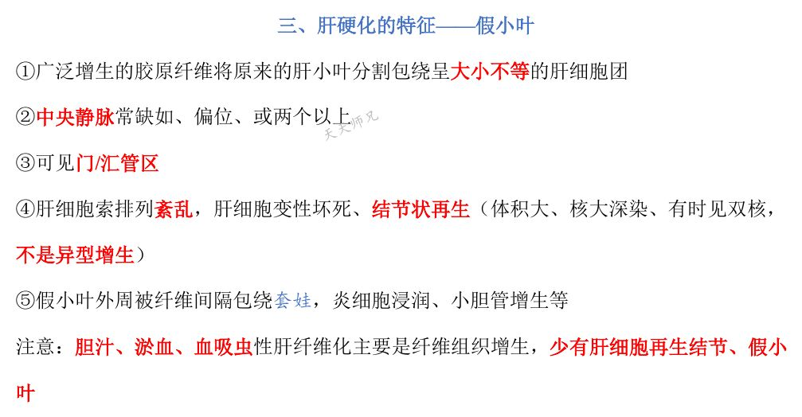
📷 讲义原图 · P2 · 假小叶
A型·单选Q10P2 · 假小叶
假小叶内中央静脉的典型改变是
答案与解析
答案：A
假小叶内中央静脉常缺如、偏位、或两个以上。
📖 讲义定位：P2 · 假小叶
X型·多选Q11P2 · 假小叶
关于假小叶，下列叙述正确的有
答案与解析
答案：ABD
D、A、B 均与讲义一致；C 错：中央静脉常缺如、偏位或两个以上。
📖 讲义定位：P2 · 假小叶
A型·单选Q12P2 · 假小叶
假小叶内再生的肝细胞体积大、核大深染、可见双核，其性质是
答案与解析
答案：A
这是结节状再生的表现，不是异型增生。
📖 讲义定位：P2 · 假小叶
A型·单选Q13P3 · 分类
小结节性（门脉性/酒精性）肝硬化的特点是
答案与解析
答案：B
小结节性（门脉性/酒精性）：结节多≤3mm、大小相仿、间隔细，并发食管胃底静脉曲张破裂出血的机率高。A、D 为大结节性（坏死后性）特点。
📖 讲义定位：P3 · 分类
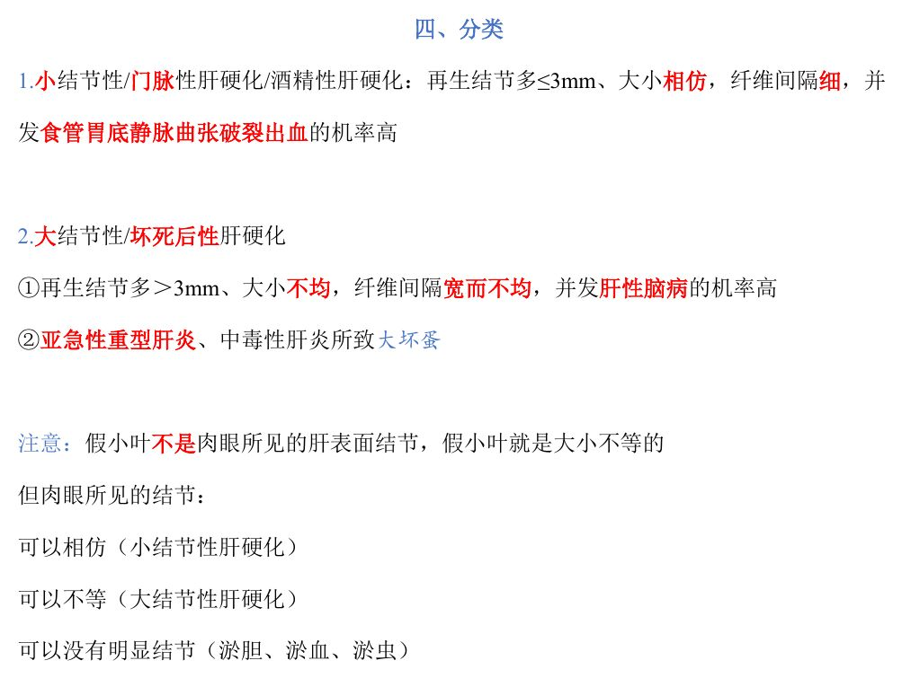
📷 讲义原图 · P3 · 分类
A型·单选Q14P3 · 分类
大结节性（坏死后性）肝硬化常见的来源疾病是
答案与解析
答案：C
大结节性（坏死后性）肝硬化多由亚急性重型肝炎、中毒性肝炎所致（大块坏死→大『坏蛋』）。
📖 讲义定位：P3 · 分类
A型·单选Q15P3 · 分类
与小结节性肝硬化相比，大结节性肝硬化更易并发
答案与解析
答案：D
大结节性并发肝性脑病机率高；小结节性并发食管胃底静脉曲张破裂出血机率高。
📖 讲义定位：P3 · 分类
X型·多选Q16P3 · 分类
关于肝硬化，下列叙述正确的有
答案与解析
答案：BCD
A 错：胆汁性、淤血性、血吸虫性肝纤维化以纤维组织增生为主，可无明显结节；诊断标准是假小叶。
📖 讲义定位：P3 · 分类
三、肝功能障碍4 题
A型·单选Q17P3 · 肝功能障碍
肝硬化患者出血倾向的主要原因是
答案与解析
答案：A
出血倾向＝凝血因子合成↓（主要）＋脾亢致血小板↓等。
📖 讲义定位：P3 · 肝功能障碍
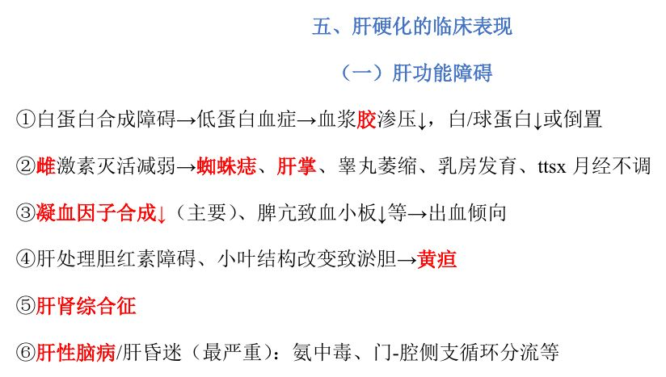
📷 讲义原图 · P3 · 肝功能障碍
A型·单选Q18P3 · 肝功能障碍
肝硬化患者出现蜘蛛痣、肝掌的机制是
答案与解析
答案：B
雌激素灭活减弱→蜘蛛痣、肝掌、睾丸萎缩、乳房发育、月经不调等。
📖 讲义定位：P3 · 肝功能障碍
A型·单选Q19P3 · 肝功能障碍
肝硬化患者低蛋白血症（白/球蛋白比值下降或倒置）的原因是
答案与解析
答案：C
白蛋白合成障碍→低蛋白血症→血浆胶体渗透压↓，白/球蛋白↓或倒置。
📖 讲义定位：P3 · 肝功能障碍
A型·单选Q20P3 · 肝功能障碍
肝硬化最严重的肝功能障碍表现是
答案与解析
答案：D
肝性脑病/肝昏迷是最严重的表现，与氨中毒、门-腔侧支循环分流等有关。
📖 讲义定位：P3 · 肝功能障碍
四、门脉高压症5 题
A型·单选Q21P5 · 门脉高压机制
肝炎肝硬化引起门脉高压的阻塞部位主要是
答案与解析
答案：A
肝炎肝硬化主要为窦性（肝血窦受压）＋窦后性（中央静脉和小叶下静脉受压）阻塞；注意不是肝静脉（肝静脉在肝后）。
📖 讲义定位：P5 · 门脉高压机制
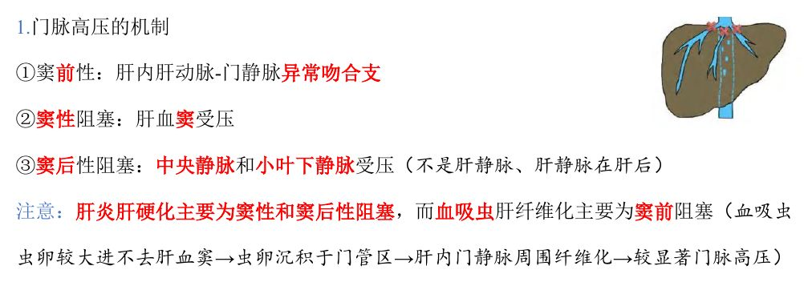
📷 讲义原图 · P5 · 门脉高压机制
A型·单选Q22P5 · 门脉高压机制
血吸虫性肝纤维化导致门脉高压的主要机制是
答案与解析
答案：B
血吸虫卵沉积于门管区→肝内门静脉周围纤维化→窦前阻塞→较显著的门脉高压。
📖 讲义定位：P5 · 门脉高压机制
A型·单选Q23P5 · 门脉高压表现
门脉高压症最具特征性的表现是
答案与解析
答案：C
侧支循环形成（最特征/最有价值）：食管胃底、直肠、腹壁静脉曲张（可形成海蛇头）。
📖 讲义定位：P5 · 门脉高压表现
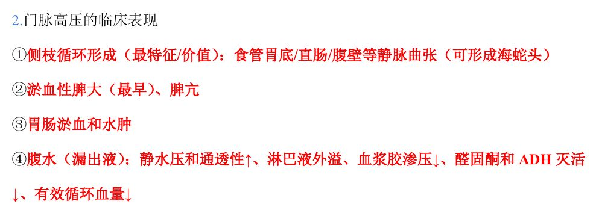
📷 讲义原图 · P5 · 门脉高压表现
A型·单选Q24P5 · 门脉高压表现
门脉高压症出现最早的表现是
答案与解析
答案：D
淤血性脾大出现最早，可伴脾亢；腹水为漏出液。
📖 讲义定位：P5 · 门脉高压表现
X型·多选Q25P5 · 门脉高压表现
下列属于门脉高压症表现的有
答案与解析
答案：ACD
蜘蛛痣属于肝功能障碍（雌激素灭活减弱）的表现，不是门脉高压症的表现（B 错）；A、C、D 均为门脉高压症表现。
📖 讲义定位：P5 · 门脉高压表现
本课速记卡
肝硬化『三病变·三变化·两改建·两表现』
- 三病变：①弥漫性肝细胞变性坏死（桥接坏死或亚大块坏死）②肝细胞结节状再生（网状支架塌陷）③广泛纤维化
- 三变化：多变形、变小、变硬（早期可正常或稍大）
- 两改建：肝小叶结构改建（假小叶＝病理诊断标准）＋肝内血液循环途径改建
- 两表现：肝功能障碍＋门脉高压症
假小叶（镜下）
- 胶原纤维分割包绕原肝小叶→大小不等肝细胞团
- 中央静脉常缺如、偏位或≥2 个；可见门/汇管区
- 肝细胞索排列紊乱、变性坏死＋结节状再生（核大深染、双核——非异型增生）
- 外周纤维间隔包绕、炎细胞浸润、小胆管增生
- 注意：假小叶≠肉眼结节；淤胆/淤血/血吸虫性以纤维化为主，少再生结节
分类对照
| 项目 | 小结节性（门脉性/酒精性） | 大结节性（坏死后性） |
|---|
| 再生结节 | 多≤3mm、大小相仿 | 多＞3mm、大小不均 |
| 纤维间隔 | 细 | 宽而不均 |
| 主要并发症 | 食管胃底静脉曲张破裂出血机率高 | 肝性脑病机率高 |
| 来源 | —— | 亚急性重型肝炎、中毒性肝炎 |
肝功能障碍（要点）
- 白蛋白合成↓→低蛋白血症、白/球↓或倒置
- 雌激素灭活↓→蜘蛛痣、肝掌（＋睾丸萎缩、乳房发育）
- 凝血因子合成↓＋脾亢→出血倾向
- 胆红素处理障碍→黄疸；肝肾综合征
- 肝性脑病/肝昏迷——最严重
门脉高压症（要点）
- 机制：肝炎肝硬化＝窦性＋窦后性；血吸虫＝窦前性
- 最特征：侧支循环（食管胃底/直肠/腹壁静脉曲张、海蛇头）
- 最早：淤血性脾大、脾亢
- 腹水＝漏出液（静水压↑、淋巴外溢、胶渗压↓、醛固酮/ADH 灭活↓等）
📚 网站题库（导入）2 组 · 4 题
说明：本部分为外部题库导入（来源：「西综题库」网站 · 病理学），题干、选项与答案保留原样；标注「教师补充」的答案未经讲义逐项复核。做题方式：点字母选择（多选后点【判卷】；答案可点开「答案与出处」查看）。
肝硬化的临床表现与腹水机制多项选择
A 腹水
B 白蛋白合成障碍
C 侧支循环形成
D 凝血因子合成减少
E 静水压和通透性↑
F 肝肾综合征（区别内科学）
G 胃肠瘀血和水肿
H 肝性脑病/肝昏迷
I 雌激素灭活障碍
J 肝处理胆红素障碍
K 直肠静脉曲张
L （最早）瘀血性脾大
M 蜘蛛痣，肝掌
N 氨中毒
O 脾亢致血小板减少
P 腹壁静脉曲张
Q 脾亢
R 低蛋白血症
S 小叶结构改变致淤胆
T 食管胃底静脉曲张
U 睾丸萎缩
V 淋巴液外溢
W 血浆胶体渗透压降低
X 黄疸
Z 出血倾向
① 门-腔侧支循环分流
② 乳房发育
③ 醛固酮和ADH灭活障碍
④ 白/球蛋白↓或倒置
⑤ 月经不调
⑥ 有效循环血量↓
网站题W1第3讲 · 第3页
肝功能障碍临床表现
答案与出处
答案：BDFHIJMNRSUWXZ②③④⑤
📖 第3讲 · 第3页
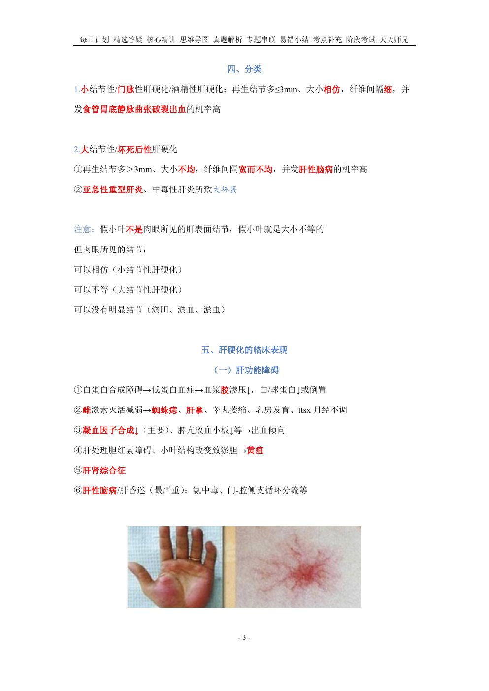
📷 讲义原图 · 第3讲 · 第3页
网站题W2第3讲 · 第5页
门脉高压的临床表现
答案与出处
答案：ACEGKLOPQTV①
📖 第3讲 · 第5页
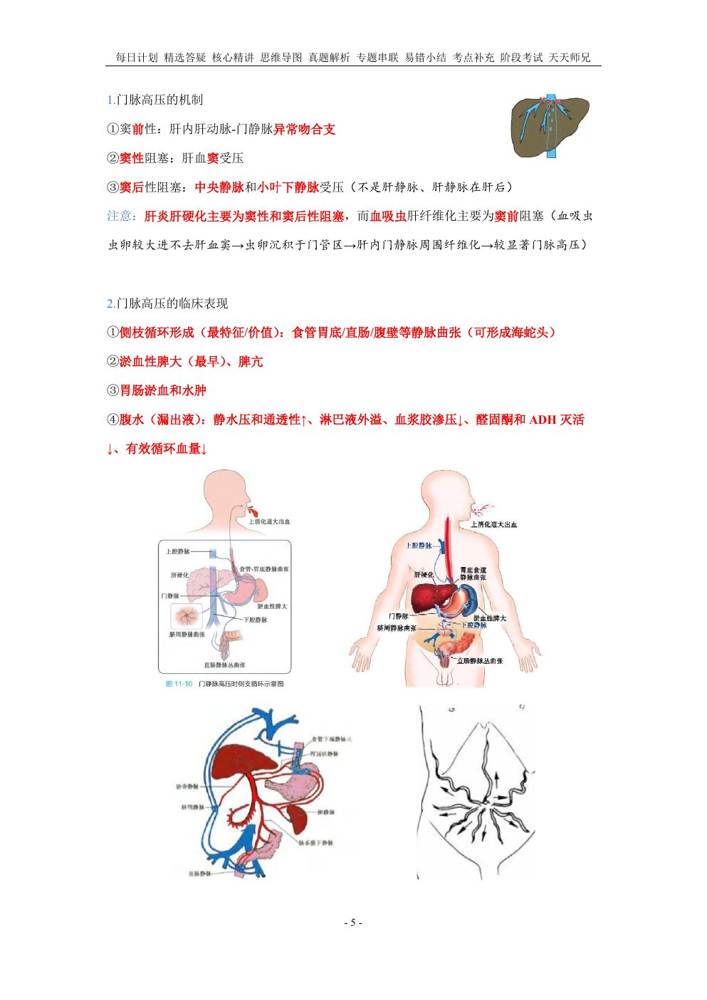
📷 讲义原图 · 第3讲 · 第5页
网站题W3第3讲 · 第5页
腹水形成的机制
答案与出处
假小叶周围结缔组织的分割包绕通常不完全,该型肝硬化的主要病因为单项选择教师补充
A 病毒性肝炎
B 胆汁淤积
C 慢性酒精中毒
D 非酒精性脂肪肝
网站题W4第3讲 · 第2页
假小叶周围结缔组织的分割包绕通常不完全,该型肝硬化的主要病因为(单选)
答案与出处
答案：B
📖 第3讲 · 第2页
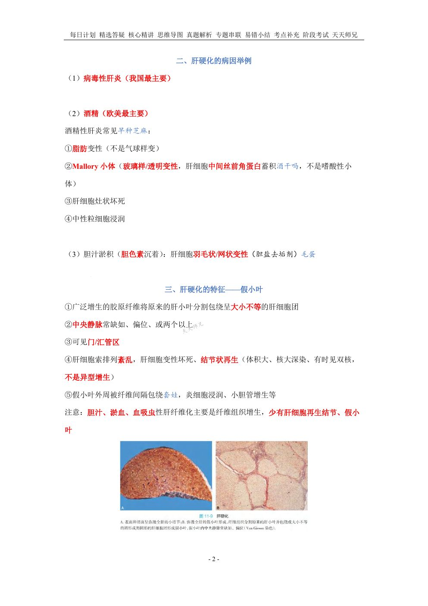
📷 讲义原图 · 第3讲 · 第2页
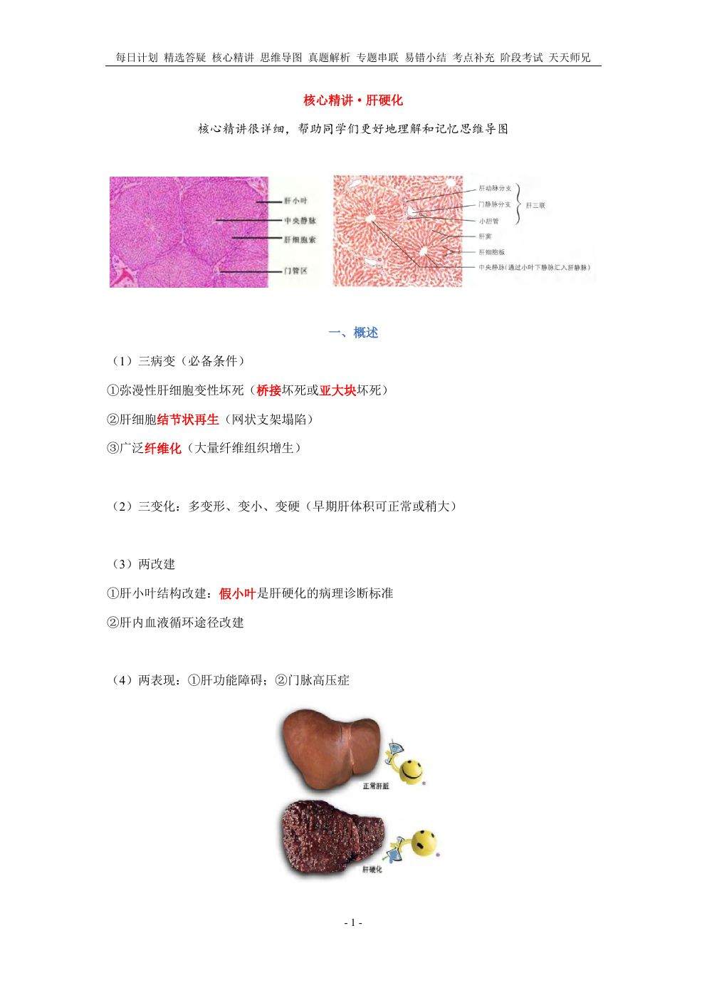
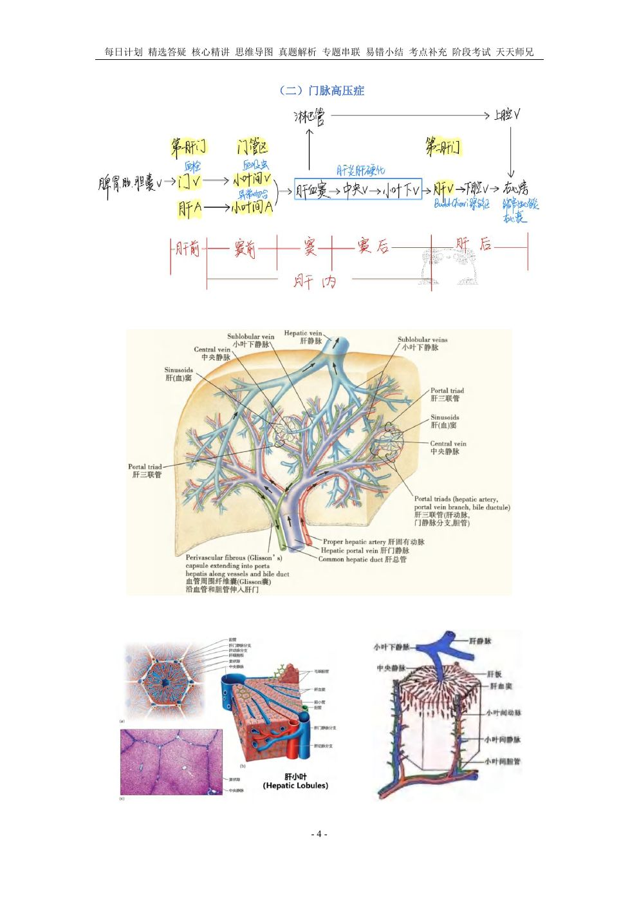
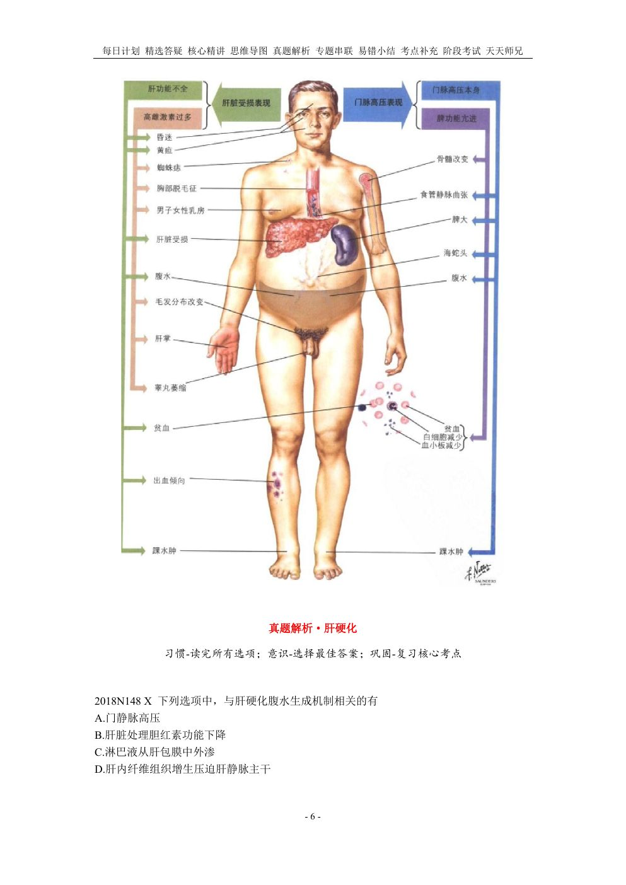